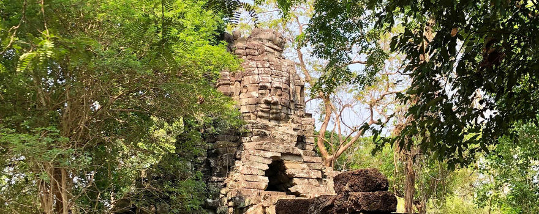
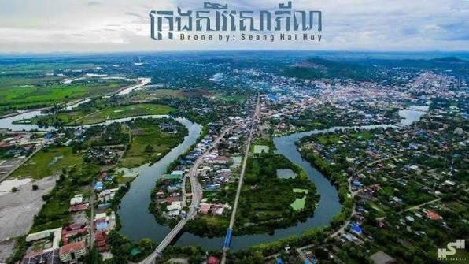
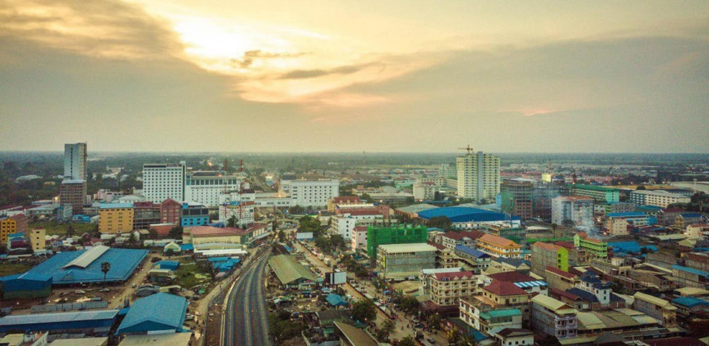

Banteay Chhmar was commissioned by the twelfth-century Khmer ruler Jayavarman VII in honor of five heroes, including his son, who died defending the Khmer empire against the Champa kingdom.

ក្រុងសិរីសោភ័ណ ឬ ស្រីសោភ័ណ គឺជាក្រុងមួយ របស់ខេត្តបន្ទាយមានជ័យ និងជាទីរួមខេត្តធំ នៃខេត្តបន្ទាយមានជ័យ និងជាទីក្រុងដែលមានប្រជាជនច្រើនជាងគេលំដាប់ទី៤ក្នុងប្រទេសកម្ពុជា។

ក្រុងប៉ោយប៉ែត កំពុងឆ្ពោះទៅជាមជ្ឈមណ្ឌលឧស្សាហកម្មដ៏មានសក្តានុពលបំផុតនៅក្នុងប្រទេស និងនៅអាស៊ីអាគ្នេយ៍ ។ ច្រកប៉ោយប៉ែត និងក្រុងប៉ោយប៉ែតបានក្លាយជាតំបន់សេដ្ឋកិច្ចដ៏សំខាន់បំផុតរបស់ខេត្តក្នុងចំណោមច្រកអន្តរជាតិសំខាន់ៗចំនួន៣ផ្សេងទៀត។